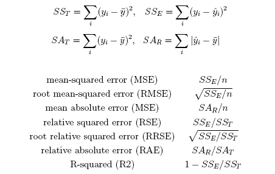
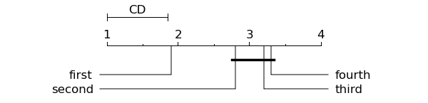

This is documentation for Orange 2.7. For the latest documentation, see Orange 3.
Method scoring (scoring)¶
Scoring plays and integral role in evaluation of any prediction model. Orange implements various scores for evaluation of classification, regression and multi-label models. Most of the methods needs to be called with an instance of ExperimentResults.
import Orange
learners = [Orange.classification.bayes.NaiveLearner(name="bayes"),
Orange.classification.tree.TreeLearner(name="tree"),
Orange.classification.majority.MajorityLearner(name="majority")]
voting = Orange.data.Table("voting")
res = Orange.evaluation.testing.cross_validation(learners, voting)
CAs = Orange.evaluation.scoring.CA(res)
AUCs = Orange.evaluation.scoring.AUC(res)
print "%10s %5s %5s" % ("Learner", "AUC", "CA")
for l, _ in enumerate(learners):
print "%10s: %5.3f %5.3f" % (learners[l].name, AUCs[l], CAs[l])
Classification¶
Calibration scores¶
Many scores for evaluation of the classification models measure whether the model assigns the correct class value to the test instances. Many of these scores can be computed solely from the confusion matrix constructed manually with the confusion_matrices function. If class variable has more than two values, the index of the value to calculate the confusion matrix for should be passed as well.
- Orange.evaluation.scoring.CA(test_results, report_se=False, ignore_weights=False)¶
Compute percentage of matches between predicted and actual class.
Parameters: - test_results – ExperimentResults or list of ConfusionMatrix.
- report_se – include standard error in result.
- ignore_weights – ignore instance weights.
Return type: list of scores, one for each learner.
Standard errors are estimated from deviation of CAs across folds (if test_results were produced by cross_validation) or approximated under the assumption of normal distribution otherwise.
- Orange.evaluation.scoring.Sensitivity(cls, test_results, **kwargs)¶
Compute sensitivity (proportion of actual positives which are correctly identified as such).
Parameters: test_results – ExperimentResults or list of ConfusionMatrix. Return type: list of scores, one for each learner.
- Orange.evaluation.scoring.Specificity(cls, test_results, **kwargs)¶
Compute specificity (proportion of negatives which are correctly identified).
Parameters: test_results – ExperimentResults or list of ConfusionMatrix. Return type: list of scores, one for each learner.
- Orange.evaluation.scoring.PPV(cls, test_results, **kwargs)¶
Compute positive predictive value (proportion of subjects with positive test results who are correctly diagnosed).
Parameters: test_results – ExperimentResults or list of ConfusionMatrix. Return type: list of scores, one for each learner.
- Orange.evaluation.scoring.NPV(cls, test_results, **kwargs)¶
Compute negative predictive value (proportion of subjects with a negative test result who are correctly diagnosed).
Parameters: test_results – ExperimentResults or list of ConfusionMatrix. Return type: list of scores, one for each learner.
- Orange.evaluation.scoring.Precision(cls, test_results, **kwargs)¶
Compute precision (retrieved instances that are relevant).
Parameters: test_results – ExperimentResults or list of ConfusionMatrix. Return type: list of scores, one for each learner.
- Orange.evaluation.scoring.Recall(cls, test_results, **kwargs)¶
Compute recall (fraction of relevant instances that are retrieved).
Parameters: test_results – ExperimentResults or list of ConfusionMatrix. Return type: list of scores, one for each learner.
- Orange.evaluation.scoring.F1(cls, test_results, **kwargs)¶
Return F1 score (harmonic mean of precision and recall).
Parameters: test_results – ExperimentResults or list of ConfusionMatrix. Return type: list of scores, one for each learner.
- Orange.evaluation.scoring.Falpha(cls, test_results, **kwargs)¶
Compute the alpha-mean of precision and recall over the given confusion matrix.
Parameters: test_results – ExperimentResults or list of ConfusionMatrix. Return type: list of scores, one for each learner.
- Orange.evaluation.scoring.MCC(cls, test_results, **kwargs)¶
Compute Matthew correlation coefficient (correlation coefficient between the observed and predicted binary classifications).
Parameters: test_results – ExperimentResults or list of ConfusionMatrix. Return type: list of scores, one for each learner.
- Orange.evaluation.scoring.AP(res, report_se=False, ignore_weights=False, **argkw)¶
Compute the average probability assigned to the correct class.
- Orange.evaluation.scoring.IS(res, apriori=None, report_se=False, **argkw)¶
Compute the information score as defined by Kononenko and Bratko (1991). Argument apriori gives the apriori class distribution; if it is omitted, the class distribution is computed from the actual classes of examples in res.
- Orange.evaluation.scoring.confusion_chi_square(confusion_matrix)¶
Return chi square statistic of the confusion matrix (higher value indicates that prediction is not by chance).
Discriminatory scores¶
Scores that measure how good can the prediction model separate instances with different classes are called discriminatory scores.
- Orange.evaluation.scoring.Brier_score(res, report_se=False, ignore_weights=False, **argkw)¶
Compute the Brier score, defined as the average (over test instances) of \sum_x(t(x) - p(x))^2, where x is a class value, t(x) is 1 for the actual class value and 0 otherwise, and p(x) is the predicted probability of x.
- Orange.evaluation.scoring.AUC(test_results=None, multiclass=0, ignore_weights=False)¶
Compute the area under ROC curve given a set of experimental results. If testing consisted of multiple folds, each fold is scored and the average score is returned. If a fold contains only instances with the same class value, folds will be merged.
Parameters: - test_results – test results to score
- ignore_weights – ignore instance weights when calculating score
- multiclass – tells what kind of averaging to perform if the target class has more than 2 values.
- Orange.evaluation.scoring.AUC_for_single_class(test_results=None, class_index=-1, ignore_weights=False)¶
Compute AUC where the class with the given class_index is singled out and all other classes are treated as a single class.
- Orange.evaluation.scoring.AUC_matrix(test_results=None, multiclass=0, ignore_weights=False)¶
Compute a (lower diagonal) matrix with AUCs for all pairs of classes. If there are empty classes, the corresponding elements in the matrix are -1.
- Orange.evaluation.scoring.AUCWilcoxon(res, class_index=-1, ignore_weights=False, **argkw)¶
Compute the area under ROC (AUC) and its standard error using Wilcoxon’s approach proposed by Hanley and McNeal (1982). If class_index is not specified, the first class is used as “the positive” and others are negative. The result is a list of tuples (aROC, standard error).
If test results consist of multiple folds, you need to split them using split_by_iterations and perform this test on each fold separately.
- Orange.evaluation.scoring.compute_ROC(res, class_index=-1)¶
Compute a ROC curve as a list of (x, y) tuples, where x is 1-specificity and y is sensitivity.
- Orange.evaluation.scoring.confusion_matrices(test_results, class_index=-1, ignore_weights=False, cutoff=0.5)¶
Return confusion matrices for test_results.
Parameters: - test_results – test results
- class_index – index of class value for which the confusion matrices are to be computed (by default unspecified - see note below).
- ignore_weights – ignore instance weights.
- cutoff – cutoff for probability
Return type: list of ConfusionMatrix or list-of-list-of-lists (see note below)
Note
If class_index is not specified and test_results contain predictions for multi-class problem, then the return value is a list of 2D tables (list-of-lists) of all class value pairwise misclassifications.
- class Orange.evaluation.scoring.ConfusionMatrix¶
Classification result summary.
Comparison of Algorithms¶
- Orange.evaluation.scoring.McNemar(res, ignore_weights=False, **argkw)¶
Compute a triangular matrix with McNemar statistics for each pair of classifiers. The statistics is distributed by chi-square distribution with one degree of freedom; critical value for 5% significance is around 3.84.
- Orange.evaluation.scoring.McNemar_of_two(res, lrn1, lrn2, ignore_weights=False)¶
McNemar_of_two computes a McNemar statistics for a pair of classifier, specified by indices learner1 and learner2.
Regression¶
Several alternative measures, as given below, can be used to evaluate the sucess of numeric prediction:
- Orange.evaluation.scoring.MSE(res, **argkw)¶
Compute mean-squared error.
- Orange.evaluation.scoring.RMSE(res, **argkw)¶
Compute root mean-squared error.
- Orange.evaluation.scoring.MAE(res, **argkw)¶
Compute mean absolute error.
- Orange.evaluation.scoring.RSE(res, **argkw)¶
Compute relative squared error.
- Orange.evaluation.scoring.RRSE(res, **argkw)¶
Compute relative squared error.
- Orange.evaluation.scoring.RAE(res, **argkw)¶
Compute relative absolute error.
- Orange.evaluation.scoring.R2(res, **argkw)¶
Compute the coefficient of determination, R-squared.
The following code (statExamples.py) uses most of the above measures to score several regression methods.
The code above produces the following output:
Learner MSE RMSE MAE RSE RRSE RAE R2
maj 84.585 9.197 6.653 1.002 1.001 1.001 -0.002
rt 40.015 6.326 4.592 0.474 0.688 0.691 0.526
knn 21.248 4.610 2.870 0.252 0.502 0.432 0.748
lr 24.092 4.908 3.425 0.285 0.534 0.515 0.715
Ploting functions¶
- Orange.evaluation.scoring.graph_ranks(filename, avranks, names, cd=None, cdmethod=None, lowv=None, highv=None, width=6, textspace=1, reverse=False, **kwargs)¶
Draws a CD graph, which is used to display the differences in methods’ performance. See Janez Demsar, Statistical Comparisons of Classifiers over Multiple Data Sets, 7(Jan):1–30, 2006.
Needs matplotlib to work.
Parameters: - filename – Output file name (with extension). Formats supported by matplotlib can be used.
- avranks – List of average methods’ ranks.
- names – List of methods’ names.
- cd – Critical difference. Used for marking methods that whose difference is not statistically significant.
- lowv – The lowest shown rank, if None, use 1.
- highv – The highest shown rank, if None, use len(avranks).
- width – Width of the drawn figure in inches, default 6 in.
- textspace – Space on figure sides left for the description of methods, default 1 in.
- reverse – If True, the lowest rank is on the right. Default: False.
- cdmethod – None by default. It can be an index of element in avranks or or names which specifies the method which should be marked with an interval.
The following script (statExamplesGraphRanks.py) shows hot to plot a graph:
import Orange
names = ["first", "third", "second", "fourth" ]
avranks = [1.9, 3.2, 2.8, 3.3 ]
cd = Orange.evaluation.scoring.compute_CD(avranks, 30) #tested on 30 datasets
Orange.evaluation.scoring.graph_ranks("statExamples-graph_ranks1.png", avranks, names, \
cd=cd, width=6, textspace=1.5)
Code produces the following graph:
- Orange.evaluation.scoring.compute_CD(avranks, N, alpha=0.05, type=nemenyi)¶
Returns critical difference for Nemenyi or Bonferroni-Dunn test according to given alpha (either alpha=”0.05” or alpha=”0.1”) for average ranks and number of tested data sets N. Type can be either “nemenyi” for for Nemenyi two tailed test or “bonferroni-dunn” for Bonferroni-Dunn test.
- Orange.evaluation.scoring.compute_friedman(avranks, N)¶
Returns a tuple composed of (friedman statistic, degrees of freedom) and (Iman statistic - F-distribution, degrees of freedoma) given average ranks and a number of tested data sets N.
Utility Functions¶
- Orange.evaluation.scoring.split_by_iterations(res)¶
Split ExperimentResults of a multiple iteratation test into a list of ExperimentResults, one for each iteration.
Multi-label classification¶
Multi-label classification requires different metrics than those used in traditional single-label classification. This module presents the various metrics that have been proposed in the literature. Let D be a multi-label evaluation data set, conisting of |D| multi-label examples (x_i,Y_i), i=1..|D|, Y_i \\subseteq L. Let H be a multi-label classifier and Z_i=H(x_i) be the set of labels predicted by H for example x_i.
- Orange.evaluation.scoring.mlc_hamming_loss(res)¶
Schapire and Singer (2000) presented Hamming Loss, which id defined as:
HammingLoss(H,D)=\frac{1}{|D|} \sum_{i=1}^{|D|} \frac{Y_i \vartriangle Z_i}{|L|}
- Orange.evaluation.scoring.mlc_accuracy(res, forgiveness_rate=1)¶
Godbole & Sarawagi, 2004 uses the metrics accuracy, precision, recall as follows:
Accuracy(H,D)=\frac{1}{|D|} \sum_{i=1}^{|D|} \frac{|Y_i \cap Z_i|}{|Y_i \cup Z_i|}
Boutell et al. (2004) give a more generalized version using a parameter \alpha \ge 0, called forgiveness rate:
Accuracy(H,D)=\frac{1}{|D|} \sum_{i=1}^{|D|} (\frac{|Y_i \cap Z_i|}{|Y_i \cup Z_i|})^{\alpha}
- Orange.evaluation.scoring.mlc_precision(res)¶
Precision(H,D)=\frac{1}{|D|} \sum_{i=1}^{|D|} \frac{|Y_i \cap Z_i|}{|Z_i|}
- Orange.evaluation.scoring.mlc_recall(res)¶
Recall(H,D)=\frac{1}{|D|} \sum_{i=1}^{|D|} \frac{|Y_i \cap Z_i|}{|Y_i|}
The following script demonstrates the use of those evaluation measures:
import Orange
def print_results(res):
loss = Orange.evaluation.scoring.mlc_hamming_loss(res)
accuracy = Orange.evaluation.scoring.mlc_accuracy(res)
precision = Orange.evaluation.scoring.mlc_precision(res)
recall = Orange.evaluation.scoring.mlc_recall(res)
print 'loss=', loss
print 'accuracy=', accuracy
print 'precision=', precision
print 'recall=', recall
print
learners = [Orange.multilabel.MLkNNLearner(k=5)]
emotions = Orange.data.Table("emotions.tab")
res = Orange.evaluation.testing.cross_validation(learners, emotions)
print_results(res)
The output should look like this:
loss= [0.9375]
accuracy= [0.875]
precision= [1.0]
recall= [0.875]
References¶
Boutell, M.R., Luo, J., Shen, X. & Brown, C.M. (2004), ‘Learning multi-label scene classification’, Pattern Recogintion, vol.37, no.9, pp:1757-71
Godbole, S. & Sarawagi, S. (2004), ‘Discriminative Methods for Multi-labeled Classification’, paper presented to Proceedings of the 8th Pacific-Asia Conference on Knowledge Discovery and Data Mining (PAKDD 2004)
Schapire, R.E. & Singer, Y. (2000), ‘Boostexter: a bossting-based system for text categorization’, Machine Learning, vol.39, no.2/3, pp:135-68.